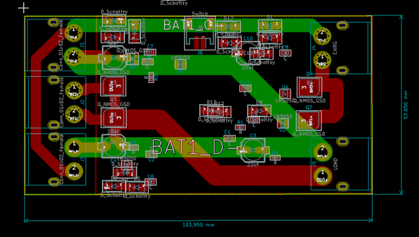
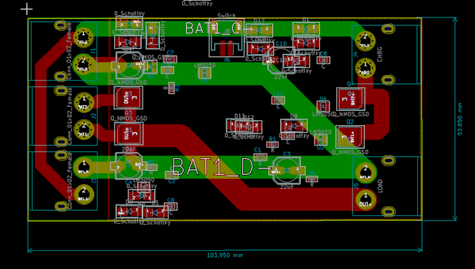
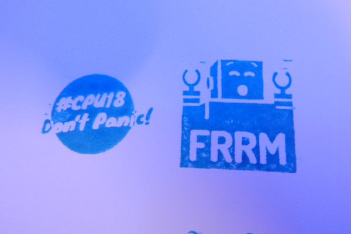
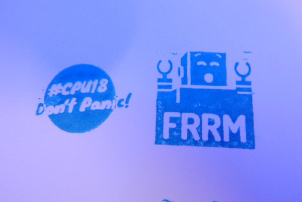

Wenn neue Leute im Freiraum vorbeikommen gibt es einen Punkt, an dem wir erklären, was wir hier überhaupt tun. Das Hauptprojekt ist die Infrastruktur im Freiraum bzw. die Entropie im Freiraum zu reduzieren. Daneben hat jedes Mitglied das eine oder andere Projekt. Hier ein paar der Projekte, die im letzten Jahr umgesetzt wurden.
Offgrid-Box (tdotu)
Das Projekt ist sozusagen ein etwas zu groß geratener Akkupack, der hilft einen Bioladen/Ökobauern auf dem Feld mit Strom zu versorgen. Verwendet werden hier gebrauchte Pedelec-Akkus, die 1.2kwh Kapazität bei 1kh Leistung zu Verfügung stellen.

 

Offgrid-box mit custom reverse-current protection board.
FGPA-Board (tdotu)

K40-Modifikationen und Engraver (Georg)
Der K40 wird kontinuierlich erweitert, 2018 ist ein höhenverstellbares Cutbed dazu gekommen. Momentan baut Georg an einem Laser-Engraver, hier soll es auch mal einen Workshop zum selbermachen geben.

Cutbed

Engraver
Jarvis (jaypee)
Da sich jay-pee etwas mit Mikrofon-Arrays auskennt, haben wir jetzt auch einen Jarvis am laufen.

Raspberry mit Respeaker
Reverse Engineering (Jani)
Jani reverse-engineered verschiedene Dinge, manche darf man auch hier zeigen.

Wlan base-station
Kleinigkeiten (frdnd)
Hier gibts nur kleinere Projekte, wie Stempel für die #CPU18, NFC-Stick (via NODE) oder einen Ausflug in die Welt der Graphen.
 


Refurbishing Freiraum
Hier nochmal eine Übersicht über die letzten Änderungen im Freiraum.

Überreste der #CPU18

Fräse und (neuer) 3D-Drucker

Dashboard mit Nahverkehr-Verbindungen

Renovierte Küche
Zusätzlich gab es einige Vorträge an den offenen Donnerstagen und Gruppentreffen vom DARC (Amateurfunk), Freifunk, OSM und CCC-Ulm. Danke für das Engagement aller Mitglieder und Freunde :)